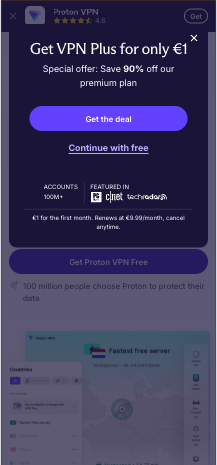
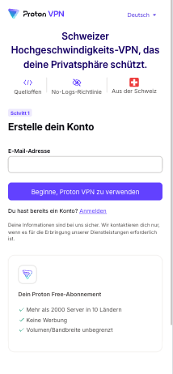

1) Proton VPN Free öffnen
Am besten direkt am Handy öffnen – kein Suchen nötig.
-
Link öffnen:
https://protonvpn.com/de/free-vpn - „Free“ auswählen
Wichtig: Wirklich Free auswählen – nicht Plus.

Free auswählen
Free nochmal bestätigen
- Im nächsten Schritt Free erneut auswählen

Free bestätigen
2) Konto erstellen
- E-Mail eingeben
- Eigenes Passwort festlegen
- Konto erstellen
Zugangsdaten merken!
Die brauchst du gleich für die Anmeldung.
Die brauchst du gleich für die Anmeldung.
3) Auf dem Fire TV Stick installieren
- Suche (Lupe) öffnen
- Proton VPN suchen
- Herunterladen → Installieren → Öffnen
4) Login per TV-Code
- In der App am TV auf Login klicken
- Code erscheint am TV
- Am Handy öffnen: https://account.protonvpn.com/tv
- Code eingeben
- TV loggt sich automatisch ein
Link unbedingt am Handy öffnen – nicht am TV eintippen.
5) Free-Server auswählen & verbinden
- Land mit „Free“-Label auswählen
- Verbinden
- Zurück zur Streaming-App
- Bei Problemen: 1–2 Server testen
Nur Free-Server
Server wechseln
App neu starten